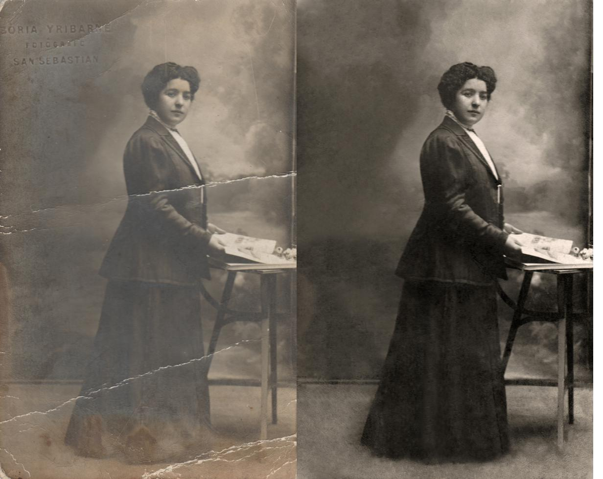
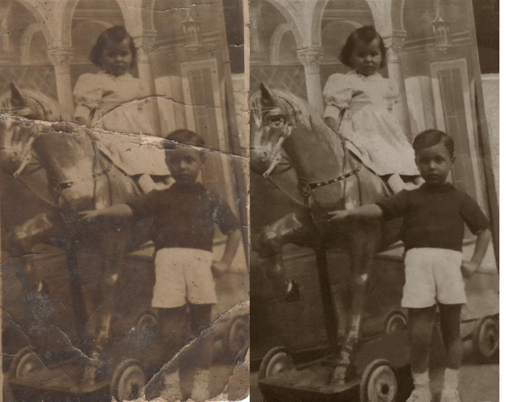
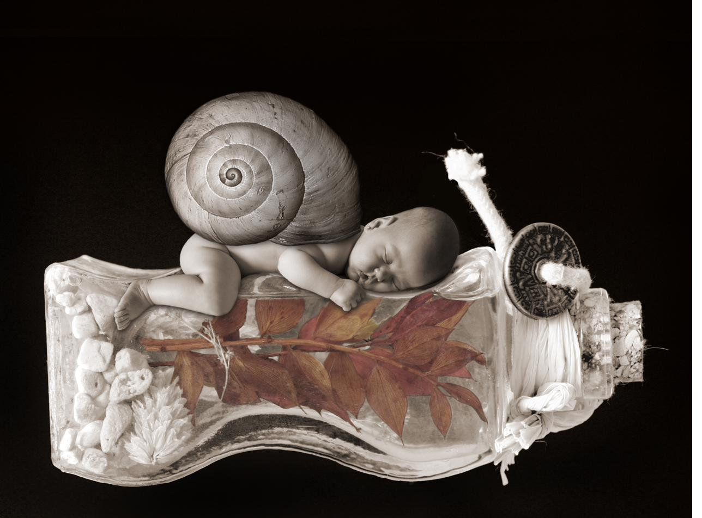
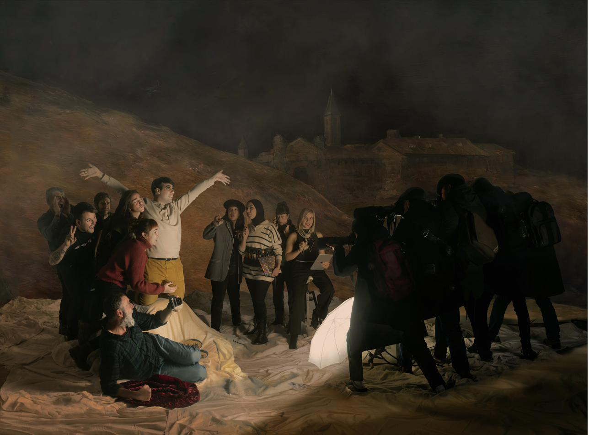
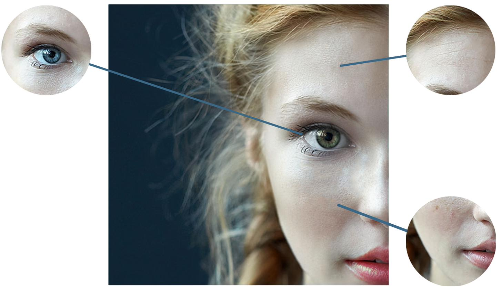

Retoque fotográfico
profesional y fotomontajes
El retoque fotográfico y el fotomontaje son disciplinas que se aprenden con el tiempo y se perfeccionan con la exigencia. No hay atajos para restaurar correctamente una fotografía de 100 años de antigüedad, ni para integrar de manera creíble elementos de distintas fuentes en una sola imagen. Requieren criterio visual, dominio técnico de Photoshop y, sobre todo, paciencia.
El objetivo no es modernizar la imagen. Es devolverle la dignidad que tenía el día que se hizo.
Estas dos fotografías pertenecen a la misma familia. La primera es un retrato formal de principios del siglo XX, realizado en San Sebastián, que llegó con una rotura diagonal que atraviesa la figura de arriba abajo. La segunda es una escena de feria de atracciones con dos niños, con deterioro severo en la esquina inferior y rotura similar. El proceso en ambos casos: análisis del daño, reconstrucción digital de las zonas perdidas respetando la textura y el grano fotográfico original, corrección de manchas, pliegues y decoloración.


Imágenes que no existen en la realidad pero convencen como si sí

Alaitz — Fotomontaje de recién nacido
Fotomontaje de recién nacido integrado en una composición surrealista con tarro de cristal, hojas otoñales, caracol gigante y elementos naturales secos. Tratamiento en sepia y blanco y negro. La integración de la figura del bebé con los elementos de la composición requirió un trabajo de silueteado y ajuste de luz muy preciso para que la imagen funcione como una pieza coherente.
Homenaje al 3 de Mayo de Goya — Recreación fotográfica
Recreación fotográfica del cuadro 'El 3 de mayo de 1808' de Francisco de Goya realizada como proyecto del curso de Diseño de Productos Gráficos. Los participantes somos los propios integrantes del curso, distribuidos en tres grupos según los bloques de personajes de la composición original. Cada grupo se fotografió por separado en estudio, ajustando la iluminación por zonas para aproximarla a la luz dramática del cuadro. El resultado final se obtuvo integrando las tres tomas sobre el fondo pictórico del paisaje nocturno de Goya, unificando luz, color y perspectiva para que el conjunto funcione como una pieza coherente.

El nivel de precisión que diferencia una fotografía aceptable de una fotografía que resiste la ampliación
Ampliación de zonas clave de la cara (ojos, ceja, nariz) para mostrar el trabajo de piel, la eliminación de imperfecciones y la conservación de la textura natural. Es el tipo de retoque que marca la diferencia.

¿Quieres verlo todo junto? El portfolio completo en un único documento.
¿Tienes una fotografía
que necesita trabajo?
Restauración, retoque o montaje. Cuéntame qué imagen tienes y qué imagen necesitas.
Solicitar presupuesto